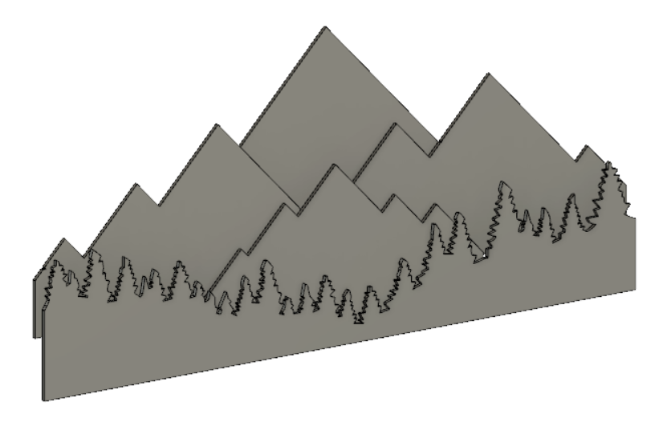

The goal of this project was to create a piece of art for my kitchen wall. I knew I wanted it to be focused on the mountains and contain some kind of light. Inspired by the Blue Ridge Mountains of Virginia I created the drawing in AutoCAD.
This drawing had all the mountains I wanted and allowed for nice depth of field but it was not ready to laser cut. I needed to fit each mountain on to a 1'x2' piece of 1/4" plywood. I ended up splicing the big picture into 6 pieces.
These 6 panels would be what I cut on the laser cutter. I took these dxf files from AutoCAD and imported them into Fusion360 to get a better idea for the depth. Fusion360 allowed me to see how far apart I wanted the panels to be and how far off the wall I wanted the wood to hang.

I created several brackets that would hold the 6 panels together and give the entire peice structure. These brackets would also gave me a spot to attach the peice to the wall.
I then laser cut all the pieces from cardboard to make sure they fit together well.
It was time to cut all the panels from 1/4" plywood. Once the panels were cut I stained them based on their layer and mounted the panels to the brackets.
With the wood work done it was time to wire the LEDs. I made sure to place them right behind each panel so they would not be visable from the front.
This is how it turned out.